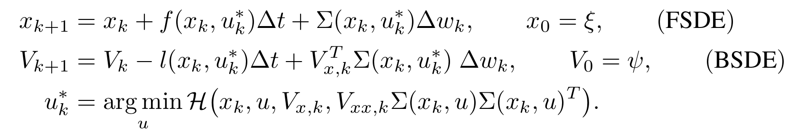
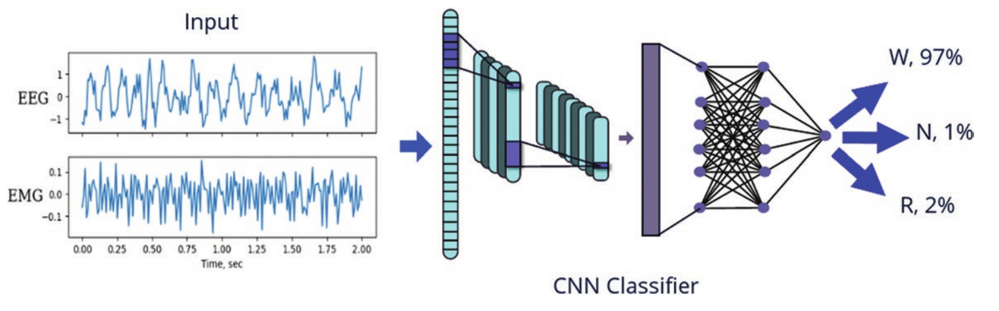
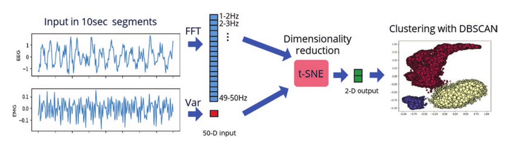
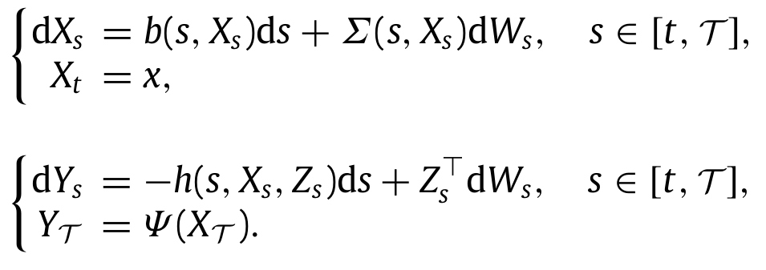
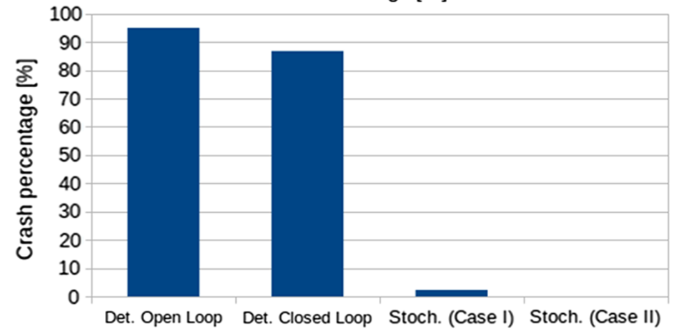
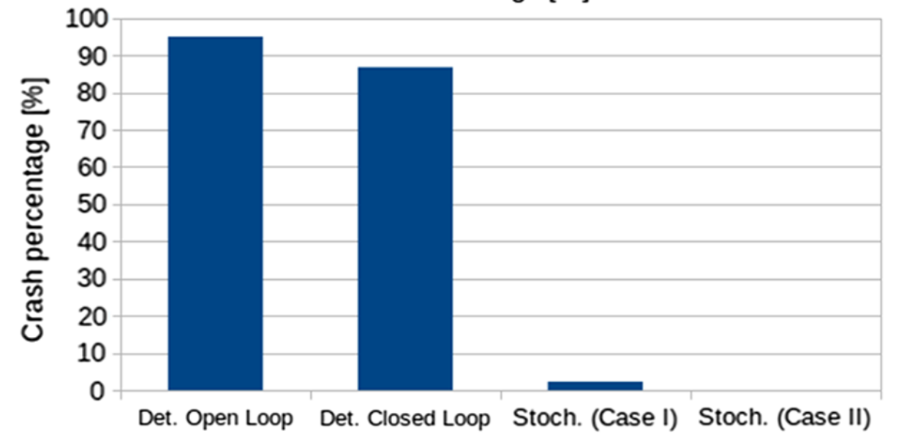
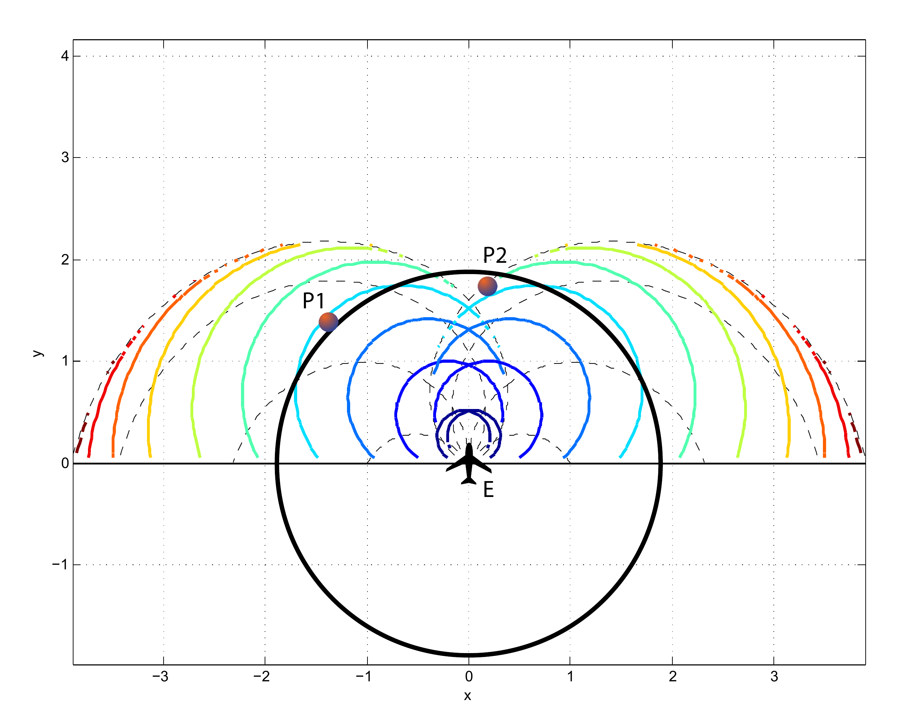
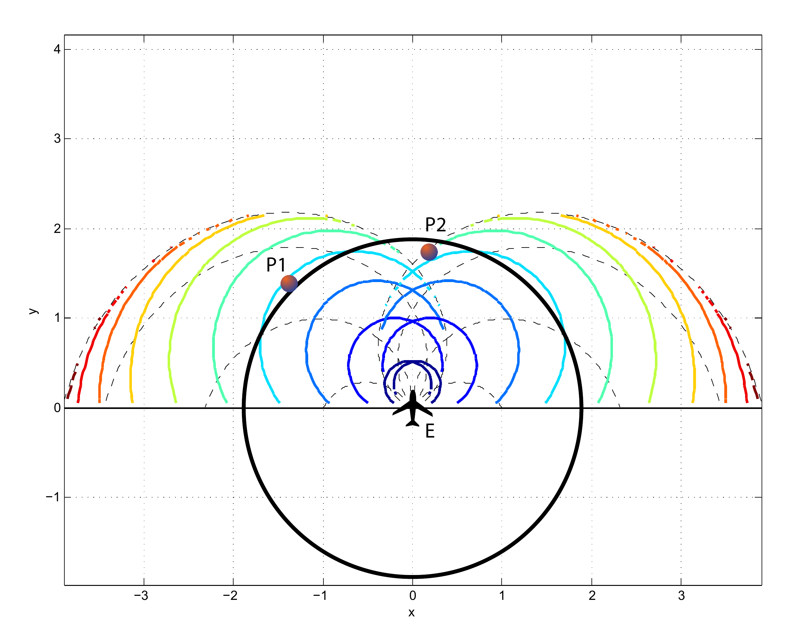

Selected Research
My research has largely focused on stochastic control, reinforcement learning, ML applications in neuroscience, and some differential game theory. You can view my doctoral dissertation here!
work with Yifeng Jiang, Wenhao Yu, and C. Karen Liu
Transferring reinforcement learning policies trained in physics simulation to the real hardware remains a challenge, known as the “sim-to-real” gap. Domain random-ization is a simple yet effective technique to address dynamics discrepancies across source and target domains, but its successgenerally depends on heuristics and trial-and-error. In this work we investigate the impact of randomized parameter selection on policy transferability across different types of domain discrepancies. Contrary to common practice in which kinematic parameters are carefully measured while dynamic parameters are randomized, we found that virtually randomizing kinematic parameters (e.g., link lengths) during training in simulation generally outperforms dynamic randomization. Based on this finding, we introduce a new domain adaptation algorithm that utilizes simulated kinematic parameters variation. Our algorithm, Multi-Policy Bayesian Optimization, trains an en- semble of universal policies conditioned on virtual kinematic parameters and efficiently adapts to the target environment using a limited number of target domain rollouts. We showcase our findings on a simulated quadruped robot in five different target environments covering different aspects of domain discrepancies.
work with Marcus Pereira, Ziyi Wang, and Evangelos Theodorou



This line of work represents a deep learning extension of the stochastic optimal control framework via Forward and Backward Stochastic Differential Equations (FBSDEs), developed in my doctoral dissertation (see further down bellow). The mathematical formulation of a Stochastic Optimal Control (SOC) problem leads to a nonlinear PDE, the Hamilton-Jacobi-Bellman PDE. This motivates algorithmic development for stochastic control that combine elements of PDE theory with deep learning. The transition from a PDE formulation to a trainable neural network is done via the concept of a system of Forward-Backward Stochastic Differential Equations (FBSDEs). Specifically, certain PDE solutions are linked to solutions of FBSDEs, which are the stochastic equivalent of a two-point boundary value problem and can be solved using a suitably defined neural network architecture. This is known in the literature as the deep FBSDE approach; the FBSDEs are then discretized over time and solved on a neural network graph. A system of FBSDEs is shown in the left figure, an example of a deep neural network architecture used to solve this system is shown in the middle. We demonstrated the scalability and applicability of the deep FBSDE controller in a finance problem, namely a 101-dimensional continuous-time stock portfolio optimization problem where the objective is to outperform the market average (see right figure).
I. Exarchos, A. A. Rogers, L. M. Aiani, R. E. Gross, G. D. Clifford, N. P. Pedersen, and J. T. Willie
 

We optimize two machine-learning approaches, supervised and unsupervised, for automated scoring of behavioral states in orexin/ ataxin-3 transgenic mice, a validated model of narcolepsy type 1, and additionally test them on wild-type mice. For the supervised approach, we employ a deep convolutional neural network architecture that is trained on expert-labeled segments of wake, non-REM sleep, and REM sleep in EEG/EMG time series data. The resulting trained classifier is then used to infer on the labels of previously unseen data. For the unsupervised approach, we leverage data dimensionality reduction and clustering techniques. Both approaches successfully score EEG/EMG data, achieving mean accuracies of 95% and 91%, respectively, in narcoleptic mice, and accuracies of 93% and 89%, respectively, in wild-type mice. This work is, to the best of our knowledge, the first set of algorithms created to specifically identify pathological sleep in narcoleptic mice. Currently available sleep-scoring algorithms are trained on wild-type animals with normal sleep/wake behavior and exhibit low accuracies for scoring pathological sleep. Therefore, this set of tools can greatly facilitate and expedite behavioral-state-scoring in narcoleptic mice, and thus is a valuable asset for sleep research labs.
work with Evangelos Theodorou and Panagiotis Tsiotras

 

In this line of work, we utilized tools from control theory, stochastic calculus, and machine learning, to propose a mathematical framework capable of addressing a large variety of Stochastic Optimal Control (SOC) problems, as well as stochastic differential games. In general, the mathematical formulation of a SOC problem leads to a nonlinear partial differential equation (PDE), known as the Hamilton-Jacobi-Bellman (HJB) PDE. Furthermore, by virtue of some results in stochastic calculus, certain PDE solutions are linked to solutions of systems of Forward and Backward Stochastic Differential Equations (FBSDEs, left figure); the latter can be seen as a stochastic equivalent of a two-point boundary value problem. Thus, rather than solving a PDE directly, one can solve its corresponding system of FBSDEs instead -- this is done numerically using sampling and function approximation techniques. The result is a novel sampling-based algorithm, which leads to a nonlinear optimal feedback control law. This controller can be utilized for a variety of control tasks (example: cart-pole in middle figure) and differential games. This is in contrast to most available algorithms within optimal control (e.g., DDP/iLQR, Path Integral control, collocation, multiple shooting etc.) which perform local trajectory optimization and need to close the loop by recalculating the solution at each instant of time, thus requiring heavy online computation during deployment. Applying the algorithm on the fuel-optimal Mars landing problem demonstrated that a deterministic optimal control law, even if it is applied in a closed-loop fashion (i.e., by recalculating the control at each instant of time), does not mitigate the risk induced by the environmental disturbances, and leads to a high probability of crash (right figure). In contrast, using the proposed method, the probability of a crash can be controlled and can be made arbitrarily small, thus highlighting the importance of stochastic control whenever external disturbances are to be expected (right figure).
work with Meir Pachter and Panagiotis Tsiotras

 

We published a couple papers on multi-agent pursuit evasion games. Using the differential game theory developed by R. Isaacs, we analyzed a game in which a less maneuverable (but potentially faster) agent is pursued by an agile agent. We determined initial conditions that lead to capture and obtained optimal controls and capture times. Using these results, we then developed a collision avoidance framework that considers the worst case of a malicious opponent that is attempting to cause a collision. The results were published in the Journal of Dynamic Games and Applications, the IEEE Conference on Decision and Control, as well as the AIAA SciTech Guidance, Navigation, and Control Conference.
- Design: HTML5 UP